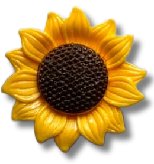
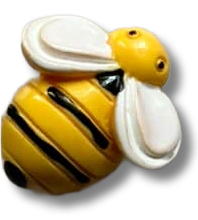

her take: if my belongings could speak...
the quiet observers of our life
────────────────────────────────────────
14 May 2025
- 
- 
If our belongings could speak, what would they speak of us? Would they speak of us with joy or with resentment?
In our childhood days, we once believed that our childhood toys would come to life whenever we were not looking. We even tried to sneak glances at them, in hopes of catching them off guard, maybe then they’ll pause their actions, meet our eyes, and finally talk to us. We also once believed that they had feelings and emotions, so we’d treat them with the utmost care and affection, making sure each one of them received equal attention, just so none of them would feel neglected and forgotten.
However, this childish belief has never left me, even now that I’ve grown older. It has stayed and continues to follow me wherever I go, quietly. “Treat every item with utmost care and respect,” is what many of my elders taught me.
Before I hang my clothes, I give them a quick shake to smooth away any creases or wrinkles. I clean our home every day as a simple thanks for being a shelter I can confide in. I give every item of mine a home, a place it rests, where I tuck them in gently. Even my mother taught me to bid a proper goodbye to the items that have served me and thank them before letting them go.
Maybe my belongings don’t talk or have a dance party when I’m not around, but they are very much full of life; they watch every move I make, they listen to every word I speak, they’ve seen parts of me that no one else has. Items, objects, things, or whatever you may call them, they are more than just their functions, I believe even they carry spirits too, much like we human beings do. They listen, they feel, and most importantly, they remember. Perhaps, if we paid closer attention, we’d feel them too.